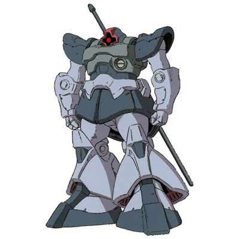

| MS-09 Dom Heavy Assault Ground Use Zeon Duchy Mobile Suit |
|
|  | |
General and Technical Data |
|
|
Model number: MS-09 Code name: Dom Unit type: mass production ground combat mobile suit Operator: Zeon Duchy Dimensions: head height 18.6 meters Weight: empty 62.6 metric tons; max gross 81.8 metric tons Construction: super-high tensile steel on monocoque frame Powerplant: Minovsky type ultracompact fusion reactor, output rated at 1269 kW Propulsion: thermonuclear "ground-effect" hover jet engines: 58200 kg total Performance: maximum thruster acceleration 0.71 G; maximum ground running speed 90 km/h; maximum ground hovering speed 240 km/h Equipment and design features: sensors, range 5400 meters Fixed armaments: 1 x scattering beam gun, mounted in torso; Optional hand armaments: H&L GB03K 360mm Giant Bazooka, clip fed, 5 rounds per clip; heat saber, battery powered Magnetic Storage Racks: 5, primary rack on backpack, one secondary rack on either hip. 2 ammunition racks on front hips. Legs can additionally mount 3-tube missile launchers or panzer fausts. Heat saber can be stored on special shoulder rack. |
|
| Technical and Historical Notes | |
|
Upon news of the Federation's institution of its own mobile suit program, Zeon engineers commenced work on a new type of mobile suit. While the MS-07 Gouf, an offshoot of the MS-06 Zaku, acted as a stopgap, Zeon R&D began cranking out the new MS-09 series. Later to be named 'Dom' the MS-09 was a radical new approach to mobile suits.
The Dom makes use of a pair of huge thermonuclear jet engines in its oversized legs to generate a cushion of air under its feet; it hovers above the ground and moves at great speed with a skiing-like motion. The Dom is thusly capable of quick maneuvering and a high overall speed in combat, giving it an unprescedented advantage over other conventional mobile suits. To compensate for the increased energy drain, the Dom was provided with a much improved reactor and thicker armor plating than the earlier Zaku and Gouf series. The Dom also sports a host of weaponry, including the powerful 360mm Giant Bazooka, and the Federal-inspired heat saber. Dom mobile suits also mounted a scattering beam gun in their torsos, designed to produce an extremely bright flash of light to blind enemy pilots.
Minor modifications of the Dom's power systems and an interchangable set of lower legs allow for space deployment; these models are known as Rick Doms.
|
| Weapons and Features | |


Dom cockpit |
|